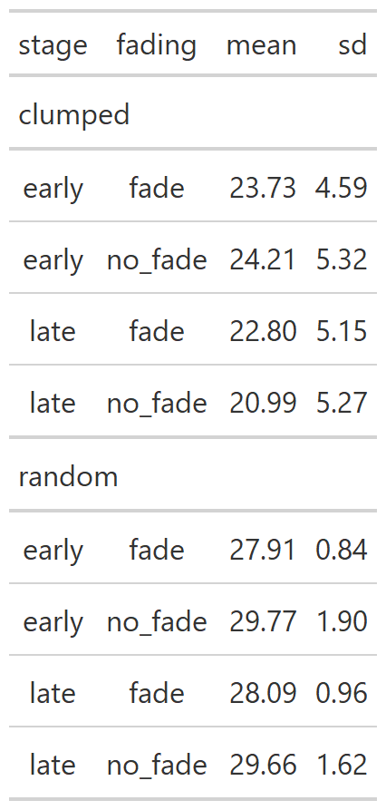
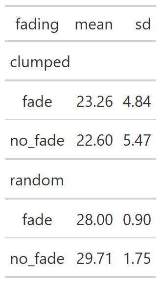
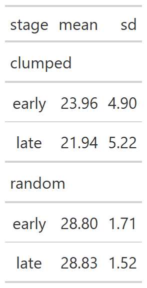
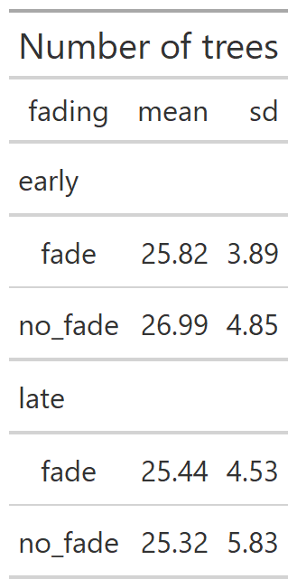
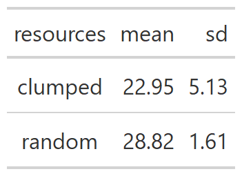
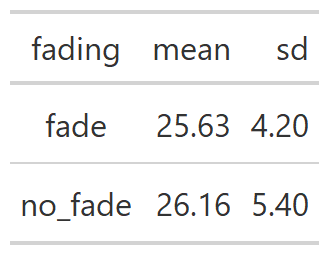
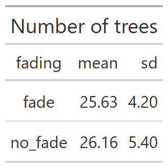
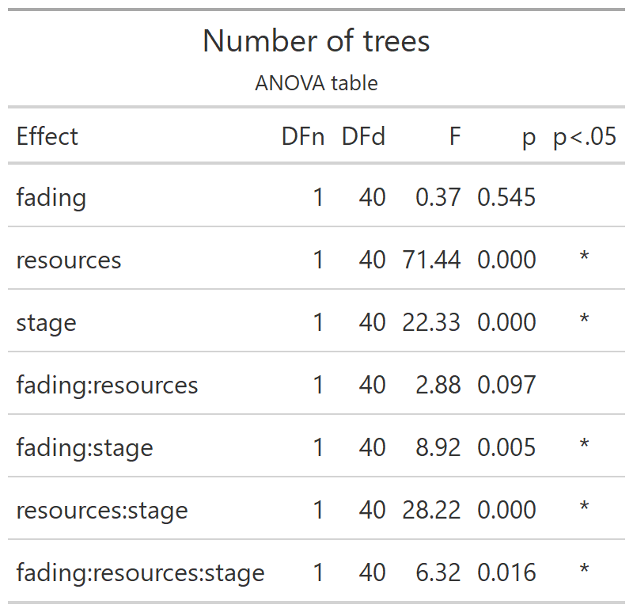

9 Number of trees
Experiment 2
Load the libraries.
This line reads in the dataset that results from collating the results files for each participant.
e2 <- readRDS("fgms_e2_allsubs.rds")This renames the raw data but doesn’t do any operations on it.
# this tibble is one row for each tree visited saying whether it was a revisit or not
e2_ntrees <-
e2 %>%
transmute(
pp = as_factor(participant),
trial = trial_number,
resources = factor(R, levels=c(".pat","dis"), labels=c("clumped", "random")),
fading = factor(V, levels=c(".fade","nofade"), labels=c("fade", "no_fade")),
stage = as_factor(ifelse(trial<=10, "early", "late")),
progress = factor(trial),
index = index,
tree = tile)9.1 Aggregation 1:
The data has a row for each tree visited. We want a trial level count of the number of trees visited.
TRIAL_SUMS <-
e2_ntrees %>%
group_by(pp, resources, stage, fading, trial, progress) %>%
summarise(trees=n())9.2 Aggregation 2:
PARTICIPANT_MEANS <-
TRIAL_SUMS %>%
group_by(pp, resources, stage, fading) %>%
summarise(mean_trees_per_stage = mean(trees))9.3 Aggregation 3:
CONDITION_MEANS <-
PARTICIPANT_MEANS %>%
group_by(resources, stage, fading) %>%
summarise(mean = mean(mean_trees_per_stage), sd = sd(mean_trees_per_stage))
RESOURCES_FADING_MEANS <-
PARTICIPANT_MEANS %>%
group_by(resources, fading) %>%
summarise(mean = mean(mean_trees_per_stage), sd = sd(mean_trees_per_stage))
RESOURCES_STAGE_MEANS <-
PARTICIPANT_MEANS %>%
group_by(resources, stage) %>%
summarise(mean = mean(mean_trees_per_stage), sd = sd(mean_trees_per_stage))
STAGE_FADING_MEANS <-
PARTICIPANT_MEANS %>%
group_by(stage, fading) %>%
summarise(mean = mean(mean_trees_per_stage), sd = sd(mean_trees_per_stage))
RESOURCES_MEANS <-
PARTICIPANT_MEANS %>%
group_by(resources) %>%
summarise(mean = mean(mean_trees_per_stage), sd = sd(mean_trees_per_stage))
STAGE_MEANS <-
PARTICIPANT_MEANS %>%
group_by(stage) %>%
summarise(mean = mean(mean_trees_per_stage), sd = sd(mean_trees_per_stage))
FADING_MEANS <-
PARTICIPANT_MEANS %>%
group_by(fading) %>%
summarise(mean = mean(mean_trees_per_stage), sd = sd(mean_trees_per_stage))9.4 Descriptives
CONDITION_MEANS %>% gt(groupname_col = "resources") %>% fmt_number(columns = c("mean","sd"), decimals=2) %>% tab_header("Number of trees") %>% gtsave("e2_tables/ntrees_condition_means.png")
RESOURCES_FADING_MEANS %>% gt(groupname_col = "resources") %>% fmt_number(columns = c("mean","sd"), decimals=2) %>% tab_header("Number of trees") %>% gtsave("e2_tables/ntrees_resources_fading_means.png")
RESOURCES_STAGE_MEANS %>% gt(groupname_col = "resources") %>% fmt_number(columns = c("mean","sd"), decimals=2) %>% tab_header("Number of trees") %>% gtsave("e2_tables/ntrees_resources_stage_means.png")
STAGE_FADING_MEANS %>% gt(groupname_col = "stage") %>% fmt_number(columns = c("mean","sd"), decimals=2) %>% tab_header("Number of trees") %>% gtsave("e2_tables/ntrees_stage_fading_means.png")
RESOURCES_MEANS %>% gt() %>% fmt_number(columns = c("mean","sd"), decimals=2) %>% tab_header("Number of trees") %>% gtsave("e2_tables/ntrees_resources_means.png")
STAGE_MEANS %>% gt() %>% fmt_number(columns = c("mean","sd"), decimals=2) %>% tab_header("Number of trees") %>% gtsave("e2_tables/ntrees_stage_means.png")
FADING_MEANS %>% gt() %>% fmt_number(columns = c("mean","sd"), decimals=2) %>% tab_header("Number of trees") %>% gtsave("e2_tables/ntrees_fading_means.png")
9.5 ANOVA with resources and stage within-subjects and fading between-subjects
options(contrasts=c("contr.sum","contr.poly"))
ez_ntrees <- ezANOVA(data=PARTICIPANT_MEANS,
dv=mean_trees_per_stage,
wid=pp,
within=c(resources,stage),
between=fading,
type=3)
#> Warning: Data is unbalanced (unequal N per group). Make sure
#> you specified a well-considered value for the type argument
#> to ezANOVA().